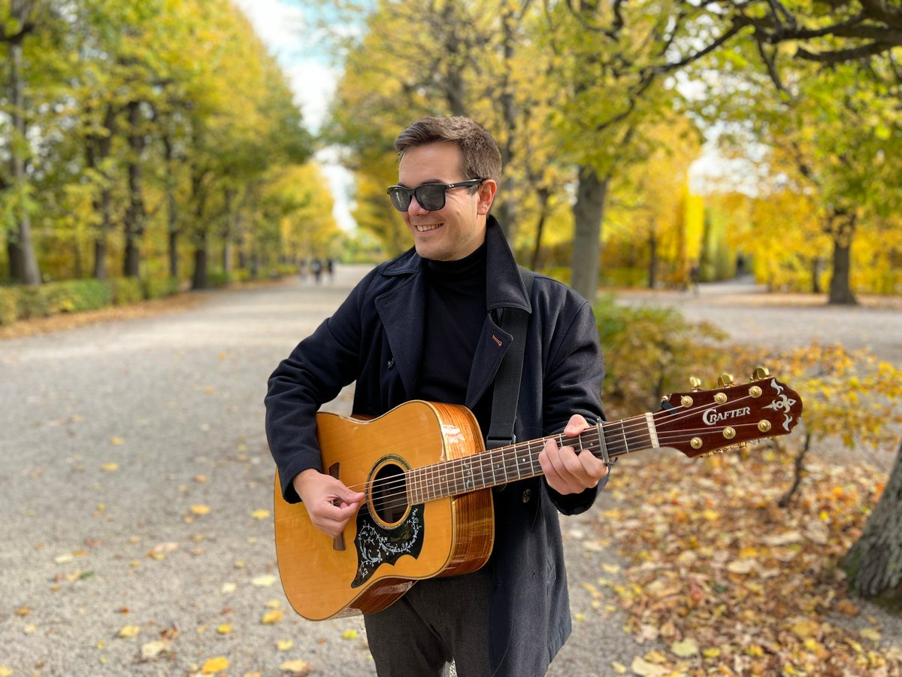
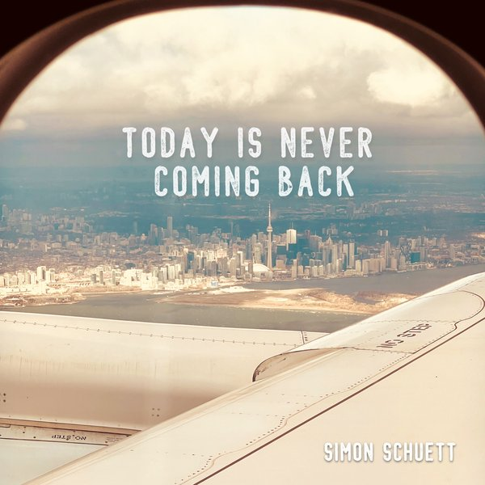
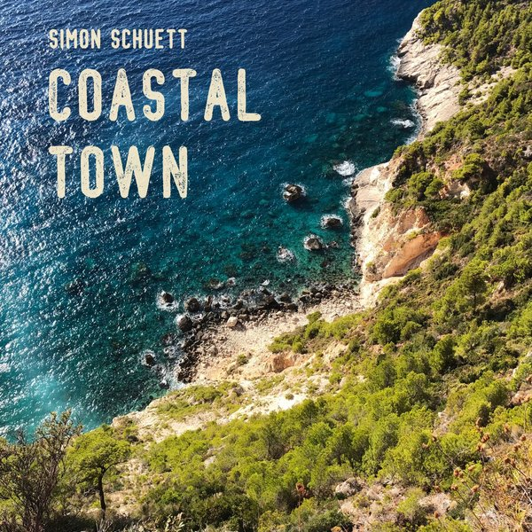
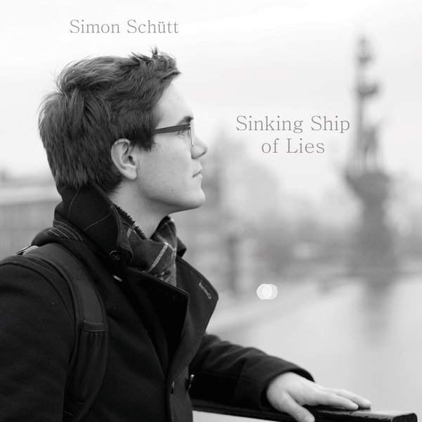
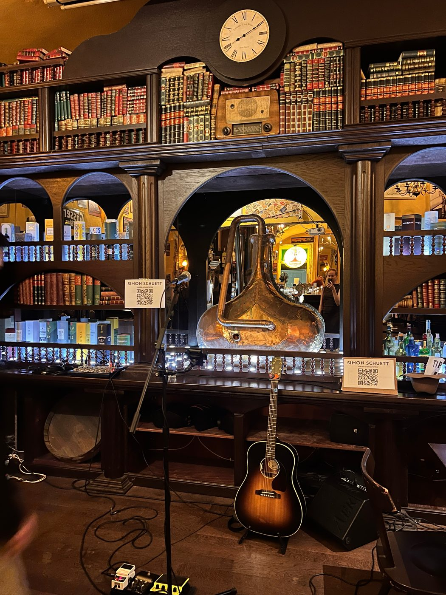

Simon Schütt – Singer-
Songwriter
aus WienSinger-
songwriter
from Vienna
Einfache Songs mit vielen Schattierungen: allein mit Akustikgitarre und Stimme.
Simple songs with many shades: just an acoustic guitar and a voice.
Über michAbout me
Ich bin Singer-Songwriter, komme aus Berlin und lebe in meiner Lieblingsstadt Wien. Meine Songs schreibe und spiele ich mit Gesang und Akustikgitarre: einfach, ehrlich und mit einem Sinn für Melodien & Rhythmen. Musik vermag es, die Vielschichtigkeit, Schattierungen und Mehrdeutigkeit des Lebens auszudrücken. Daher sind auch meine Songs vielfältig wie das Leben selbst.
Es geht um Freundschaft, Altern und Liebe, um die Grautöne des Lebens: melancholisch, aber leicht, mit einem Augenzwinkern. Zu meinen Einflüssen zählen Indie-Rock von Death Cab for Cutie, den Strokes und den Arctic Monkeys, die Beatles, irische Singer-Songwriter wie Damien Rice und Glen Hansard sowie Pop von Coldplay und John Mayer.
Live spiele ich Coversongs und eigene Songs: zum Mitsingen, zum Mitfühlen und um Menschen miteinander zu verbinden. Wenn es lauter sein darf, stehe ich mit meiner Indierockband Bunski auf der Bühne. Dort findest du weitere Musik von mir.
I am a singer-songwriter from Berlin and live in my favourite city, Vienna. I write and perform my songs with vocals and acoustic guitar: simple, honest and with a sense for melodies & rhythms. Music has the power to express the complexity, shades and ambiguity of life. That is why my songs are as diverse as life itself.
They are about friendship, ageing and love, about the shades of grey in life: melancholic, but light, with a wink. My influences include indie rock by Death Cab for Cutie, the Strokes and the Arctic Monkeys, the Beatles, Irish singer-songwriters like Damien Rice and Glen Hansard, and pop by Coldplay and John Mayer.
Live I play covers and original songs: to sing along to, to feel something and to bring people together. When it can be louder, I play with my indie rock band Bunski. There you can find more of my music.

Auf einen BlickAt a glance
- BasisBased inWienVienna
- FormatSolo: Gitarre, Gesang, StompboxSolo: guitar, vocals, stompbox
- Repertoire100+ Songs, Eigenes & Covers100+ songs, originals & covers
- DauerLength45 Min. bis ganzer Abend45 min to a full evening
- Buchbar fürAvailable forHochzeiten, Geburtstage, Events, BarsWeddings, birthdays, events, bars
- ErfahrungExperience30+ Auftritte in Wien und Deutschland30+ shows in Vienna and Germany
- BandBunski (Gesang, Gitarrevocals, guitar)
MusikMusic
Meine Veröffentlichungen als Singer-Songwriter.
My releases as a singer-songwriter.



Live-VideosLive videos
„The World Got Older“: In den Bergen von Südtirol. „We’re Still Friends“: Im Schlosspark Schönbrunn in Wien. Die Videos öffnen sich auf YouTube.“The World Got Older”: In the mountains of South Tyrol. “We’re Still Friends”: In the Schönbrunn Palace Gardens in Vienna. The videos open on YouTube.
Weitere Musik: mit BunskiMore music: with Bunski
Weitere Musik von mir gibt es mit meiner Band Bunski. Ich singe und spiele Gitarre in der Wiener Indierockband. Mehr Songs, Live-Termine und Fotos findest du auf bunski.band.
You can find more of my music with my band Bunski. I sing and play guitar in the Vienna indie rock band. More songs, live dates and photos are on bunski.band.
SonglisteSong list
Neben meinen eigenen Songs singe ich gern Klassiker von The Beatles, Coldplay, Johnny Cash, Damien Rice, Simon & Garfunkel, Green Day und vielen mehr. Die Liste umfasst 100 Titel und ist nicht abschließend, Wunschsongs sind jederzeit willkommen. Eine Auswahl:
In addition to my own songs, I enjoy singing classics by The Beatles, Coldplay, Johnny Cash, Damien Rice, Simon & Garfunkel, Green Day and many more. The list has 100 titles and is not exclusive, and song requests are always welcome. A selection:
- Happy Together
- Crazy Little Thing Called Love
- The Boxer
- Sweet Caroline
- Hallelujah
- Shut Up and Dance
- Help
- Wonderwall
- Mr. Brightside
- Free Falling
- Have You Ever Seen the Rain
- Knocking On Heavens Door
- Folsom Prison Blues
- Mad World
- Cannonball
- Volcano
- Heart of Gold
- Viva la Vida
Live
Nächste AuftritteUpcoming shows
- Mickey Finn’s Irish Pub, Wien
- Mickey Finn’s Irish Pub, Wien
Bisherige AuftrittePast shows
- Mickey Finn’s Irish Pub, Wien
- Club Lucia, Wien · mit Bunskiwith Bunski
- Cafe Carina, Wien · mit Bunskiwith Bunski
- The Church International Pub, Wien · mit Bunskiwith Bunski
- Belushi’s Bar, Wien
- Belushi’s Bar, Wien
Ältere Auftritte anzeigenShow older shows
- Belushi’s Bar, Wien
- Belushi’s Bar, Wien
- Belushi’s Bar, Wien
- Belushi’s Bar, Wien
- Café IIN, Wien
- Belushi’s Bar, Wien
- Belushi’s Bar, Wien
- The Church International Pub, Wien · & Friends
- Ratingen, Deutschland
- Sassafras, Düsseldorf
- Café Kafka, Wien
- The Church International Pub, Wien
- Sassafras, Düsseldorf
- The Church International Pub, Wien
- Währinger Wohnzimmer, Wien
- Coco Bar, Wien
- The Church International Pub, Wien
- Café Kafka, Wien
- Ever Artist Evening, Wien
- Coco Bar, Wien
- The Church International Pub, Wien
- The Church International Pub, Wien
- U.S.W., Wien
- Cultiva Hanfexpo, Marx Halle, Wien
Ich spiele bei Events, in Pubs, bei Open Mics und auf der Straße in Wien. In Pubs fülle ich auch einen ganzen Abend. Buchbar für Hochzeiten, Geburtstage, Straßenfeste, Eröffnungen und Bars.
I play at events, in pubs, at open mics and on the streets of Vienna. In pubs I can fill a whole evening. Available for weddings, birthdays, street fairs, openings and bars.
FotosPhotos
TechnikTech
Für kleinere Locations (bis ca. 70 Personen) brauche ich nur eine Steckdose, alles Weitere bringe ich selbst mit. Bei größeren Locations wird eine PA-Anlage benötigt.
Ich spiele vor allem Akustikgitarre mit Tonabnehmer und singe, nutze aber auch ein Stompbox-Pedal für Percussion. Bühnenplan und weitere Technik-Details gibt es auf Anfrage.
For smaller venues (up to about 70 people) I only need a power outlet and bring everything else myself. Larger venues need a PA system.
I mainly play acoustic guitar with a pickup and sing, but I also use a stompbox pedal for percussion. Stage plan and further tech details are available on request.
- Kleine LocationsSmall venuesBis ca. 70 Personen: eine Steckdose genügtUp to about 70 people: a power outlet is enough
- Größere LocationsLarger venuesPA-Anlage vor OrtPA system on site

Häufige FragenFAQ
Wer ist Simon Schütt?Who is Simon Schütt?
Simon Schütt (auch: Simon Schuett) ist ein deutscher Singer-Songwriter aus Berlin und lebt in Wien. Er schreibt und spielt seine Songs allein mit Akustikgitarre und Stimme, mit Sinn für Melodien und Themen wie Freundschaft, Altern und Liebe. Außerdem steht er mit der Wiener Indierockband Bunski auf der Bühne.
Simon Schütt (also spelled Simon Schuett) is a German singer-songwriter from Berlin who lives in Vienna. He writes and performs his songs on his own with acoustic guitar and voice, with a sense for melodies and themes like friendship, ageing and love. He also plays with the Vienna indie rock band Bunski.
Wofür kann ich Simon Schütt buchen?What can I book Simon Schütt for?
Für Hochzeiten, Geburtstage, Events, Straßenfeste, Eröffnungen und Bars. Simon spielt solo mit Akustikgitarre und Gesang, bei Bedarf mit einem Stompbox-Pedal für Percussion.
For weddings, birthdays, events, street fairs, openings and bars. Simon plays solo with acoustic guitar and vocals, and uses a stompbox pedal for percussion when needed.
Welche Songs spielt Simon Schütt?Which songs does Simon Schütt play?
Eigene Songs wie „Today Is Never Coming Back“, „Coastal Town“ und „Sinking Ship of Lies“ sowie Klassiker von The Beatles, Coldplay, Johnny Cash, Damien Rice, Simon & Garfunkel, Green Day und vielen mehr. Die Songliste umfasst 100 Titel und steht als PDF bereit. Wunschsongs sind willkommen.
Original songs such as “Today Is Never Coming Back”, “Coastal Town” and “Sinking Ship of Lies”, plus classics by The Beatles, Coldplay, Johnny Cash, Damien Rice, Simon & Garfunkel, Green Day and many more. The song list has 100 titles and is available as a PDF. Song requests are welcome.
Welche Technik wird benötigt?What equipment is needed?
Für kleinere Locations (bis ca. 70 Personen) genügt eine Steckdose, alles Weitere bringt Simon selbst mit. Bei größeren Locations wird eine PA-Anlage benötigt.
For smaller venues (up to about 70 people) a power outlet is enough, and Simon brings everything else himself. Larger venues need a PA system.
Wie lange dauert ein Auftritt?How long is a performance?
Von kurzen Sets ab 45 Minuten bis zu einem ganzen Abend ist alles möglich: In Pubs kann Simon problemlos einen kompletten Abend füllen und hat schon fast drei Stunden gespielt (mit kurzer Pause). Länge und Pausen werden vorab abgesprochen.
From short sets of 45 minutes up to a full evening: in pubs Simon can easily fill a whole night and has played almost three hours (with a short break). Length and breaks are agreed in advance.
Wo tritt Simon Schütt auf?Where does Simon Schütt perform?
Vor allem in Wien, zum Beispiel in der Belushi’s Bar, im Mickey Finn’s Irish Pub und im The Church International Pub, außerdem in Düsseldorf. Für andere Orte schreib einfach eine Nachricht.
Mainly in Vienna, for example at Belushi’s Bar, Mickey Finn’s Irish Pub and The Church International Pub, and also in Düsseldorf. For other places, just send a message.
Wie buche ich Simon Schütt?How do I book Simon Schütt?
Per E-Mail an simonschuett.music@gmail.com oder per Nachricht auf Instagram (@simon.schuett). Hilfreich sind Datum, Ort, Anlass und die erwartete Gästezahl.
By email at simonschuett.music@gmail.com or by message on Instagram (@simon.schuett). Helpful details are the date, place, occasion and the expected number of guests.
Gibt es weitere Musik von Simon Schütt?Is there more music by Simon Schütt?
Ja, mit der Wiener Indierockband Bunski, in der Simon singt und Gitarre spielt: bunski.band. Songs wie „World Got Older“ und „Reunion“ gibt es auf Spotify.
Yes, with the Vienna indie rock band Bunski, where Simon sings and plays guitar: bunski.band. Songs such as “World Got Older” and “Reunion” are on Spotify.
PressefotosPress photos
Hochauflösende Fotos zum Download. Bitte bei Veröffentlichung den Foto-Credit angeben. Weitere Fotos schicke ich gern auf Anfrage.
High-resolution photos for download. Please credit the photographer when publishing. More photos are available on request.
{kind=link}
{kind=link}
{kind=link}
Kontakt & BookingContact & booking
Für Konzertanfragen und Auftritte bei Events wie Hochzeiten oder Geburtstagen: Schreib mir eine E-Mail an simonschuett.music@gmail.com oder eine Nachricht auf Instagram. Auch Fragen zu meiner Musik beantworte ich gern.
For concert enquiries and performances at events such as weddings or birthdays: email simonschuett.music@gmail.com or message me on Instagram. I am also happy to answer questions about my music.